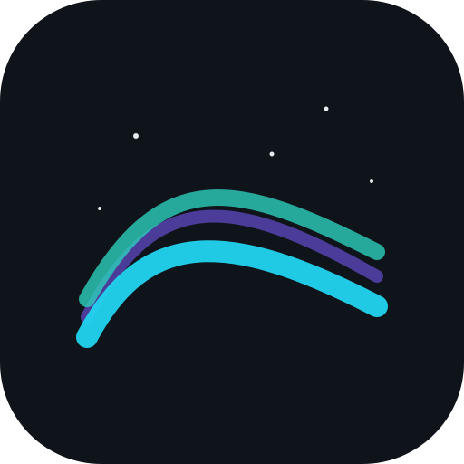

Aurora

Aurora is a cross-platform desktop AI chat client built to demonstrate production desktop-app engineering — streaming LLM responses, local message-history persistence, a secure IPC architecture, real-time presence, and native OS integration.
Architecture
- Shell: Electron with a clean main / preload / renderer split.
- Renderer: React + Vite + TypeScript (strict mode) — a virtualized message list, conversation list, composer, and presence/typing indicators.
- Main process: owns the SQLite database (better-sqlite3), the LLM API key, and the WebSocket client.
- Bridge: a small typed
window.auroraAPI exposed overcontextBridge— the renderer never touches Node directly.
Features
- Streaming chat — the main process calls the LLM with streaming enabled and forwards each token to the UI over IPC, appending incrementally.
- Persistent history — conversations and messages stored in SQLite, with paginated history loads.
- Real-time presence — a WebSocket channel drives typing indicators and a presence dot.
- Native integration — OS notifications for background replies,
aurora://deep linking, and an auto-update path.
Security model
Aurora follows the correct Electron security posture: contextIsolation: true, nodeIntegration: false, and sandbox: true. The renderer can only call the small typed preload API; Node, the filesystem, the LLM key, and the database all stay in the main process.
[Actively in development — add screenshots and the repo / release link here.]